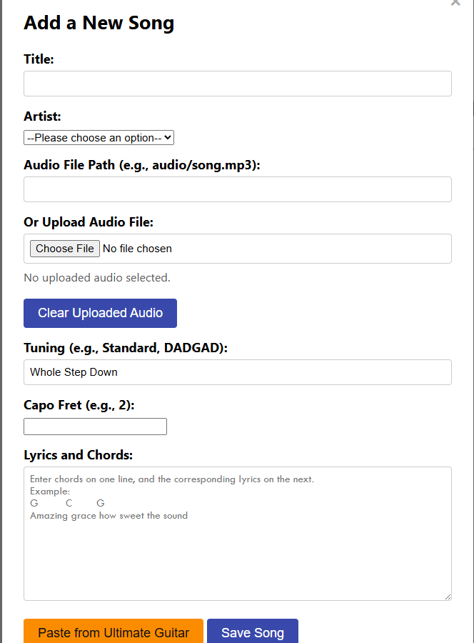
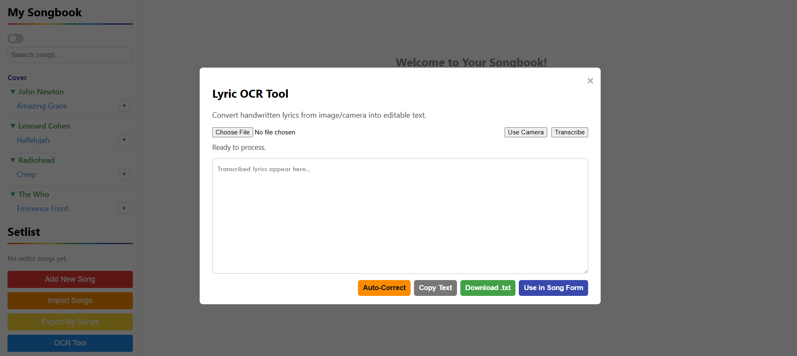

Overview
Songbook solves a problem every musician knows: your songs are scattered everywhere — some on Ultimate Guitar, some in a notebook, some on loose paper. This app brings them all into one place with two smart import methods.
The Ultimate Guitar importer pulls chord charts and lyrics directly from a URL. The OCR scanner lets you point your camera at any written or printed lyrics sheet and transcribes it automatically. Both end up in the same clean, searchable songbook.
How It Works
Import from Ultimate Guitar
Paste a Ultimate Guitar URL and the app fetches the chord chart and lyrics, strips the formatting, and saves it to your songbook in a clean, readable layout.

Overview
What This Project Delivers
Songbook addresses a common creative problem: songs and lyric drafts are scattered across screenshots, browser tabs, notebooks, and memory. The app consolidates those sources into a searchable system that is easier to build on over time.
The workflow supports both structured cataloging and in-the-moment creativity. Musicians can capture ideas quickly, refine them later, and maintain a usable long-term library without heavy process overhead.
=======Project Case Study
Songbook
A songwriting and lyric-management app that blends digital imports, OCR capture, and library organization into one creative workspace for musicians.
Highlights
Key Features
- Flexible import and capture paths make it easy to bring both digital and handwritten material into one library.
- OCR-assisted flow reduces retyping effort and accelerates preservation of offline lyric notes.
- Library organization supports quick retrieval by title, context, and evolving song versions.
- User experience is optimized for repeated writing sessions and lightweight editing cycles.
- Project architecture leaves room for future performance and collaboration-oriented extensions.
Overview
What This Project Delivers
Songbook addresses a common creative problem: songs and lyric drafts are scattered across screenshots, browser tabs, notebooks, and memory. The app consolidates those sources into a searchable system that is easier to build on over time.
The workflow supports both structured cataloging and in-the-moment creativity. Musicians can capture ideas quickly, refine them later, and maintain a usable long-term library without heavy process overhead.
>>>>>>> parent of f9df37e (Revert "Merge branch 'main' of https://github.com/jamesbrentlingeriv-spec/portfolio")Highlights
Key Features
- Flexible import and capture paths make it easy to bring both digital and handwritten material into one library.
- OCR-assisted flow reduces retyping effort and accelerates preservation of offline lyric notes.
- Library organization supports quick retrieval by title, context, and evolving song versions.
- User experience is optimized for repeated writing sessions and lightweight editing cycles.
- Project architecture leaves room for future performance and collaboration-oriented extensions.
Build
Stack And Tools
Screenshots
Professional Screenshot Review

Media from the import, OCR, and library views demonstrating the end-to-end writing workflow.